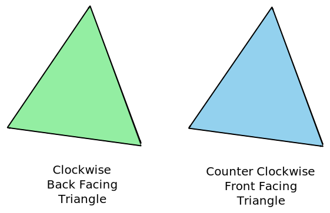

WebGL - 三次元正投影
この記事はWebGLシリーズの一つである。最初の記事はWebGLの基本で始まった。 そして、前回の記事は行列の数学について。まだ読んでいなかったら先に読んで下さい。
前回の記事は行列数学をどういうふうに使うかということについてだった。 移動、回転、拡大縮小、ピクセル空間からクリップ空間に投影することも, 一つの行列と魔法のような行列数学で出来ることを紹介した。 三次元はそこから一歩先に進む。
前回の二次元サンプルで二次元頂点(x, y)を3x3行列に掛けた。三次元の為に三次元頂点(x, y, z)を 4x4行列に掛ける必要がある。
前回のサンプルを三次元に更新しよう！また「F」の図形を使うけど今回は三次元の「F」を使う。
まず頂点シェーダーを三次元に更新しなければいけない。 これは前のシェーダーである。
<script id="vertex-shader-2d" type="x-shader/x-vertex">
attribute vec2 a_position;
uniform mat3 u_matrix;
void main() {
// positionを行列に掛ける。
gl_Position = vec4((u_matrix * vec3(a_position, 1)).xy, 0, 1);
}
</script>
これは新しいシェーダーである。
<script id="vertex-shader-3d" type="x-shader/x-vertex">
*attribute vec4 a_position;
*uniform mat4 u_matrix;
void main() {
// positionを行列に掛ける。
* gl_Position = u_matrix * a_position;
}
</script>
もっと単純化された！
そして、三次元データを与えなければいけない。
...
// 属性にどうやってpositionBuffer（ARRAY_BUFFER）からデータを取り出すか。
* var size = 3; // 呼び出すごとに3つの数値
var type = gl.FLOAT; // データは32ビットの数値
var normalize = false; // データをnormalizeしない
var stride = 0; // シェーダーを呼び出すごとに進む距離
// 0 = size * sizeof(type)
var offset = 0; // バッファーの頭から取り始める
gl.vertexAttribPointer(
positionAttributeLocation, size, type, normalize, stride, offset)
...
// バッファーに’F’の形の頂点を入れる。
function setGeometry(gl) {
gl.bufferData(
gl.ARRAY_BUFFER,
new Float32Array([
// 左縦列
* 0, 0, 0,
* 30, 0, 0,
* 0, 150, 0,
* 0, 150, 0,
* 30, 0, 0,
* 30, 150, 0,
// 上の横棒
* 30, 0, 0,
* 100, 0, 0,
* 30, 30, 0,
* 30, 30, 0,
* 100, 0, 0,
* 100, 30, 0,
// 下の横棒
* 30, 60, 0,
* 67, 60, 0,
* 30, 90, 0,
* 30, 90, 0,
* 67, 60, 0,
* 67, 90, 0]),
gl.STATIC_DRAW);
}
次に、行列関数を二次元から三次元に更新しよう。
これは二次元（更新する前の形）m3.translation、とm3.rotation、とm3.scalingの関数である。
var m3 = {
translation: function translation(tx, ty) {
return [
1, 0, 0,
0, 1, 0,
tx, ty, 1
];
},
rotation: function rotation(angleInRadians) {
var c = Math.cos(angleInRadians);
var s = Math.sin(angleInRadians);
return [
c,-s, 0,
s, c, 0,
0, 0, 1
];
},
scaling: function scaling(sx, sy) {
return [
sx, 0, 0,
0, sy, 0,
0, 0, 1
];
},
};
そして、これは三次元に更新されたバージョンである。
var m4 = {
translation: function(tx, ty, tz) {
return [
1, 0, 0, 0,
0, 1, 0, 0,
0, 0, 1, 0,
tx, ty, tz, 1,
];
},
xRotation: function(angleInRadians) {
var c = Math.cos(angleInRadians);
var s = Math.sin(angleInRadians);
return [
1, 0, 0, 0,
0, c, s, 0,
0, -s, c, 0,
0, 0, 0, 1,
];
},
yRotation: function(angleInRadians) {
var c = Math.cos(angleInRadians);
var s = Math.sin(angleInRadians);
return [
c, 0, -s, 0,
0, 1, 0, 0,
s, 0, c, 0,
0, 0, 0, 1,
];
},
zRotation: function(angleInRadians) {
var c = Math.cos(angleInRadians);
var s = Math.sin(angleInRadians);
return [
c, s, 0, 0,
-s, c, 0, 0,
0, 0, 1, 0,
0, 0, 0, 1,
];
},
scaling: function(sx, sy, sz) {
return [
sx, 0, 0, 0,
0, sy, 0, 0,
0, 0, sz, 0,
0, 0, 0, 1,
];
},
};
三つの回転関数があることに気付いただろう。二次元なら一つしか要らなかった。それはZ軸で回転 するようだった。三次元ならX軸でとY軸でも回転出来るようにしたい。見たら前の回転関数に似てるだろう。 前と同じように計算式を単純化したら同じように簡単になる。
Z軸で回転
Y軸で回転
X軸で回転
その三つの回転方法はこのように回転する。
前と同じように単純な関数も作ろう。
translate: function(m, tx, ty, tz) {
return m4.multiply(m, m4.translation(tx, ty, tz));
},
xRotate: function(m, angleInRadians) {
return m4.multiply(m, m4.xRotation(angleInRadians));
},
yRotate: function(m, angleInRadians) {
return m4.multiply(m, m4.yRotation(angleInRadians));
},
zRotate: function(m, angleInRadians) {
return m4.multiply(m, m4.zRotation(angleInRadians));
},
scale: function(m, sx, sy, sz) {
return m4.multiply(m, m4.scaling(sx, sy, sz));
},
投影関数も更新しなきゃ。これは前の関数。
projection: function (width, height) {
// Note: Y軸で０を上の方にするためYをひっくり返す行列
return [
2 / width, 0, 0,
0, -2 / height, 0,
-1, 1, 1
];
},
}
これはピクセル空間からクリップ空間の変換である。三次元のため、初めからこうにしてみよう。
projection: function(width, height, depth) {
// Note: Y軸で０を上の方にするためYをひっくり返す行列
return [
2 / width, 0, 0, 0,
0, -2 / height, 0, 0,
0, 0, 2 / depth, 0,
-1, 1, 0, 1,
];
},
XとYをピクセル空間からクリップ空間に変換するのが必要なのと同じように、Zにも変換が必要である。
Zもピクセル単位で計算する。widthのような値をdepthに与えるとピクセル空間の横は０〜widthピクセルで、縦は0〜heightピクセルで、でも奥行きは-depth / 2〜+depth / 2である。
最後に行列計算の所も更新が必要である。
// 行列を計算する。
* var matrix = m4.projection(gl.canvas.clientWidth, gl.canvas.clientHeight, 400);
* matrix = m4.translate(matrix, translation[0], translation[1], translation[2]);
* matrix = m4.xRotate(matrix, rotation[0]);
* matrix = m4.yRotate(matrix, rotation[1]);
* matrix = m4.zRotate(matrix, rotation[2]);
* matrix = m4.scale(matrix, scale[0], scale[1], scale[2]);
// 行列を設定する。
* gl.uniformMatrix4fv(matrixLocation, false, matrix);
さあ、出来たサンプルはこれである。
第一の問題は「F」の図形が平らで三次元にあまり見えないことである。 それを立体にしよう。今の「F」の図形は2つの三角形で出来ている三つの四角形で作られている。 立体にする為16枚の四角形が必要である。前面に三つ、裏面に三つ、左面に一つ、右面に四つ、 上面2つ、下面に三つ四角形が必要である。

これは全て表示するには多すぎる。四角形16枚、四角形ごとに2つの三角形、三角形ごとに3つの頂点は96頂点になる。 全部を見たければソースを見て下さい。
超点数が増えたので。。。
// Draw the geometry.
var primitiveType = gl.TRIANGLES;
var offset = 0;
* var count = 16 * 6;
gl.drawArrays(primitiveType, offset, count);
これはこのサンプルである。
スライダを操作しても三次元になっているかどうか分かり辛いだろう。 四角形ごとに別色をつかってみよう！その為に頂点シェーダーに属性を追加して、 バリイングで頂点シェーダーからピクセルシェーダーに渡す。
これは新しい頂点シェーダーである。
<script id="vertex-shader-3d" type="x-shader/x-vertex">
attribute vec4 a_position;
+attribute vec4 a_color;
uniform mat4 u_matrix;
+varying vec4 v_color;
void main() {
// positionを行列に掛ける。
gl_Position = u_matrix * a_position;
+ // 色をピクセルシェーダーに渡す。
+ v_color = a_color;
}
</script>
その色はピクセルシェーダーで使わなければいけない。
<script id="fragment-shader-3d" type="x-shader/x-fragment">
precision mediump float;
+// 頂点シェーダーに渡された色。
+varying vec4 v_color;
void main() {
* gl_FragColor = v_color;
}
</script>
色の属性位置を調べて、他のバッファーを作成して、バッファーに頂点色を入れることが必要である。
...
var colorLocation = gl.getAttribLocation(program, "a_color");
...
// 色のバッファーの作成。
var colorBuffer = gl.createBuffer();
gl.bindBuffer(gl.ARRAY_BUFFER, colorBuffer);
// バッファーに色を入れる。
setColors(gl);
...
// バッファーに「F」の色を入れる。
function setColors(gl) {
gl.bufferData(
gl.ARRAY_BUFFER,
new Uint8Array([
// 前面の左縦列
200, 70, 120,
200, 70, 120,
200, 70, 120,
200, 70, 120,
200, 70, 120,
200, 70, 120,
// 前面の上の横棒
200, 70, 120,
200, 70, 120,
...
...
gl.STATIC_DRAW);
}
図形を描画する時、色の属性をどういうふうに色のバァッファーからデータ取得するかの設定をする必要がある。
// 色の属性オンにする。
gl.enableVertexAttribArray(colorLocation);
// 色バッファーをARRAY_BUFFERに結び付ける。
gl.bindBuffer(gl.ARRAY_BUFFER, colorBuffer);
// 属性にどうやってcolorBuffer（ARRAY_BUFFER)からデータを取り出すか。
*var size = 3; // 呼び出すごとに3つの数値
var type = gl.UNSIGNED_BYTE; // データは8ビット符号なし整数
var normalize = false; // データをnormalizeする（０〜２５５から０−１に）
var stride = 0; // シェーダーを呼び出すごとに進む距離
// 0 = size * sizeof(type)
var offset = 0; // バッファーの頭から取り始める
gl.vertexAttribPointer(
colorLocation, size, type, normalize, stride, offset)
これになった。
このメチャクチャな絵は何だ？実は「F」の図形の三角形は定義された順番に描画される。 その順番によると前面の三角形が書かれた後裏面の三角形が描画される。

WebGLで三角形は前向きと裏向きのコンセプトがある。前向き三角形はその三角形の頂点が 時計回りになっている三角形である。裏向き三角形はその三角形の頂点が反時計回りになっている三角形である。

WebGLで前向きか裏向きの三角形しか描画しない機能がある。このようにその機能をオンに出来る。
gl.enable(gl.CULL_FACE);
drawSceneの関数に入れる。その機能のデフォルトは裏向きの三角形を描画しないことである。
三角形が時計回りか反時計回りかクリップ空間で判断される。つまり、頂点シェーダーを適用した後 前向きか裏向きか判断する。時計回りの三角形が−1にスケールされたら反時計回りになる。あるいは、 時計回りの三角形がY軸で180度回転されたら反時計回りになる。
CULL_FACEの機能がオフになっているので時計回り（前向き）と反時計回り（裏向き）の三角形
が両方見える。オンにすると前向きの三角形は、回転でも、スケールでも、どの理由でも裏向きになった場合
WebGLに描画されない。それはいいことでしょう。三次元なら自分に向いている三角形は前向きだとWebGLに認識して欲しい。
CULL_FACEをオンにするとこうなる。
やばい！三角形が消えた！実は多くの三角形の向きが間違えている。反対向きになるまで回転してみれば 現れてくる。簡単に直せる。逆になっている三角形の頂点を2つ交換だけでいい。例えば裏向きの 三角形の頂点はこうなら。
1, 2, 3,
40, 50, 60,
700, 800, 900,
最後の2つの頂点を交換すれば前向きになる。
1, 2, 3,
700, 800, 900,
40, 50, 60,
間違えている三角形を全て直したらこうなる。
これはもっと正しく描画しているがまだ一つの問題が残っている。三角形は完全に正しい向きになって、 裏向きの三角形が描画されないのに、後ろの三角形が前の三角形の上に描画されている状態が残っている。
デプスバッファ登場
デプスバッファ（またZバッファ）はピクセルごとにデプス・ピクセルの長方形である。デプス・ピクセルはそのピクセルの奥行きの距離である。 WebGLは色のピクセルを描くとともにデプス・ピクセルも描ける。頂点シェーダーに返したZで描画する。 XとYはクリップ空間に変更しなければいけないのと同じように、Zもクリップ空間に返さなければいけない。 その値はデプス空間（0〜+1）にされる。WebGLは色ピクセルを描く前に、その色ピクセルのデプス・ピクセルをチェックする。 描こうとしている色のピクセルのデプス値がデプス・ピクセルより大きい場合色ピクセルを描かない。 さもなければ、ピクセルシェーダーに与えられた色で色ピクセルを描いて、デプスの値をデプス・ピクセルにも描く。 つまり、前のピクセルの上に後ろのピクセルを描かないということである。
この機能は裏向きの三角形を描画しないのと同じように簡単にオンに出来る。
gl.enable(gl.DEPTH_TEST);
描画する前にデプス・バッファを1.0にクリアしなきゃ。
// Draw the scene.
function drawScene() {
...
// Clear the canvas AND the depth buffer.
* gl.clear(gl.COLOR_BUFFER_BIT | gl.DEPTH_BUFFER_BIT);
...
それでこうなった。
それは三次元である！
もう一つ小さい点だが、一般的な三次元数学ライブラリに、
クリップ空間からピクセル空間に変換する「projection」という関数がない。
その代わりにorthoとかorthographicという関数がある。
通常このようになっている。
var m4 = {
orthographic: function(left, right, bottom, top, near, far) {
return [
2 / (right - left), 0, 0, 0,
0, 2 / (top - bottom), 0, 0,
0, 0, 2 / (near - far), 0,
(left + right) / (left - right),
(bottom + top) / (bottom - top),
(near + far) / (near - far),
1,
];
}
先説明した横、縦、奥行きしか使ってない単純なprojection関数と違って、
この一般的なもっとフレキシブルな正投影の関数は右、左、上、下、全面、裏面を使っている。
projectionの関数と同じように使いたければこのように呼び出せばいい。
var left = 0;
var right = gl.canvas.clientWidth;
var bottom = gl.canvas.clientHeight;
var top = 0;
var near = 400;
var far = -400;
var projection = m4.orthographic(left, right, bottom, top, near, far);
次の記事は透視投影についての記事である。